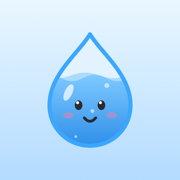

Privacy Policy
Who we are
Just Hydration is made by Trent Howard, an independent developer ("we", "us"). This policy explains what the Just Hydration app for iPhone and Apple Watch does with information. If you have questions, contact us at justhydration.app@gmail.com.
Information stored on your device
To work, the app stores what you enter on your iPhone: the drinks you log, your daily goal, the details you give during setup (such as body weight, activity level, climate, and wake-up and bedtime), your reminders, challenges, fasting sessions, and app settings.
- This information is saved only on your device. It is shared with the app's widgets on the same iPhone, and with Just Hydration on your Apple Watch using Apple's built-in connection between your devices.
- We do not operate any servers for the app, and this information is never sent to us.
- Like other app data, it may be included in your iPhone backups (for example iCloud Backup), according to your own Apple settings.
Apple Health (optional)
If you choose to connect Apple Health, the app can:
- Save the water, caffeine, sugar and dietary energy (calories) from the drinks you log.
- Read your workouts and exercise minutes, only to raise your water goal on active days (a Just Hydration Plus feature).
Health information is used only to provide these features. It is never sent to us, never shared with third parties, and never used for advertising or marketing. You can change or remove access at any time in the Health app or in iPhone Settings → Health → Data Access & Devices.
Location and weather (optional)
If you turn on "Adjust goal for hot weather" (a Just Hydration Plus feature), the app asks for your approximate location. It rounds your coordinates to about 1 km and uses Apple Weather (Apple's WeatherKit service) to get today's highest temperature. The request goes to Apple, not to us, and is covered by Apple's Privacy Policy (weather data sources). Your location is not stored by the app or sent to us. You can turn this off at any time in the app's Settings or in iPhone Settings → Privacy & Security → Location Services.
Notifications
Reminders and fasting alerts are scheduled on your device. We don't use push notification servers and don't receive any information when you get or respond to a reminder.
Purchases
Just Hydration Plus is purchased through Apple's App Store. Payments are handled entirely by Apple; we never see your payment details. The app checks your purchase status with Apple on your device to unlock Plus features. Apple's handling of purchase information is described in Apple's Privacy Policy. App Store sales reports we receive from Apple do not identify you.
Your choices: export and delete
- Export: Just Hydration Plus subscribers can export their drink history as a CSV file from Settings. The file is shared only where you choose to send it.
- Delete: Settings → Reset all data erases everything the app has stored. Deleting the app also removes its data from your device. Information already saved to Apple Health stays there until you delete it in the Health app.
Children
Just Hydration is not directed to children under 13. Because the app does not collect personal information, we do not knowingly collect any information from children.
Not medical advice
Water goals and drink values in the app are general estimates, not medical advice. Talk to a doctor about your personal fluid needs.
Changes to this policy
If this policy changes, we will update this page and the effective date above. Significant changes will also be mentioned in the app's release notes.
Contact
Questions or requests: justhydration.app@gmail.com